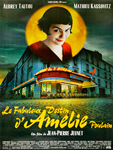

|  | Una de mis películas favoritas es "Le fabuleux destin d'Amélie Poulain" conocida en México cono "Amélie", protagonizada por Audrey Tautou, dirigida y escrita por Jean-Pierre Jeunet. La película retrata la historia de una joven mujer ingenua dispuesta a ayudar a todo el que la rodea. La historia se desarrolla en los lugares más representativos de Paris. |
||
|
Dirección: |
Jean-Pierre Jeunet |
||
|
Guión: |
Guillaume Laurant |
||
|
Actores: |
Audrey Tautou |
||